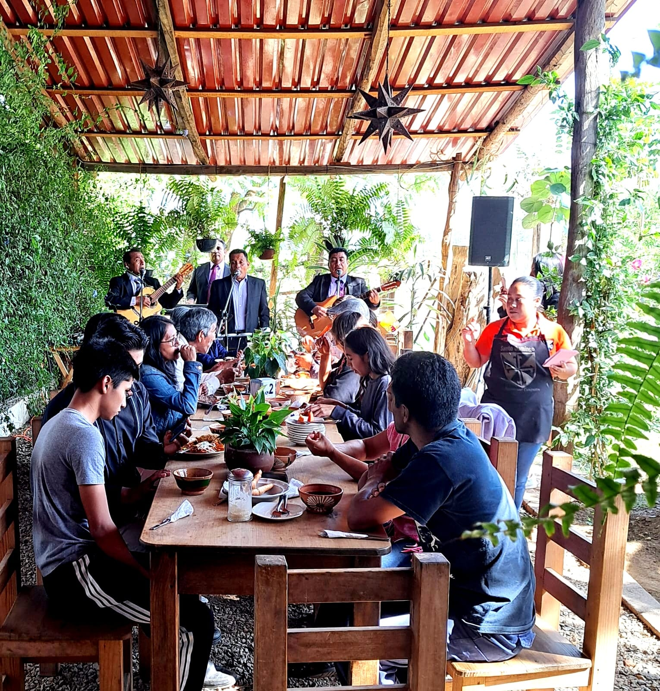
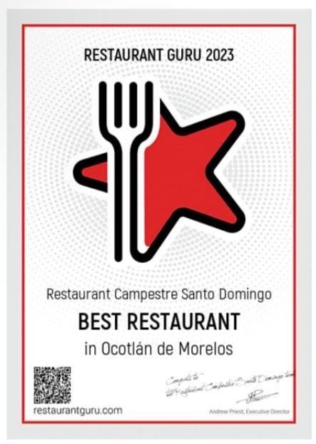

Un sueño que comenzó en 2018
Una familia oaxaqueña que busca promover la cultura gastronómica y ofrecer una experiencia única

Un proyecto que inició en el año 2018 por una familia ocoteca que busca promover la cultura gastronómica oaxaqueña y el contacto con la naturaleza.
En Restaurant Campestre Santo Domingo, ofrecemos una experiencia gastronómica auténtica y acogedora para todas las familias, en un ambiente natural y campestre. Nuestro compromiso es ofrecer platillos tradicionales, preparados con los mejores ingredientes de proveedores locales.
Buscamos que cada visita sea una oportunidad para que nuestros comensales disfruten de lo mejor de la tierra oaxaqueña y creen recuerdos especiales en familia.
Todos los platillos son preparados al momento, agradecemos su espera.
Misión · Visión · Propósito
Lo que nos mueve cada día
Misión
Ofrecer una experiencia culinaria única fusionando ingredientes locales con técnicas tradicionales, en un ambiente único y familiar.
Visión
Ser el referente de la gastronomía oaxaqueña en la región, reconocidos por nuestra autenticidad, calidez y calidad.
Propósito
Rescatar y preservar la tradición gastronómica de Oaxaca, creando momentos inolvidables alrededor de la mesa.

Restaurant Guru
Restaurant Campestre Santo Domingo ha sido galardonado con la Insignia de Recomendación de Restaurant Guru, una de las plataformas gastronómicas más grandes del mundo con más de 30 millones de usuarios. Este logro es gracias a la preferencia de todos ustedes en Ocotlán de Morelos. ¡Ven a celebrar con nosotros y descubre por qué somos un lugar de referencia!
iOverlander
Galardonado por la comunidad viajera como un lugar de referencia en Ocotlán de Morelos.
Horarios y ubicación
Te esperamos con los brazos abiertos
Horario de atención
- Lunes a Domingo 7:00 am – 7:00 pm
- Paquetes de desayuno 7:30 am – 1:00 pm
¡Todos los días servimos con gusto!
Ubicación
Ocotlán de Morelos, Oaxaca, México
¿Tienes alguna pregunta?
Reserva tu mesa o solicita información